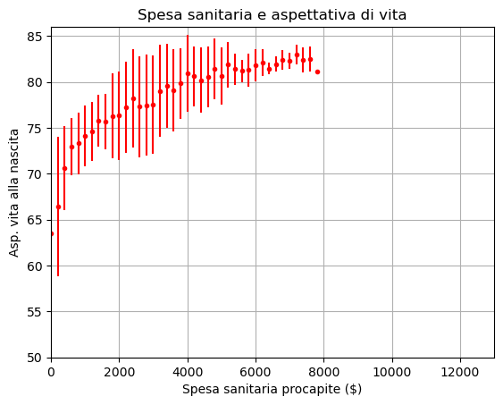
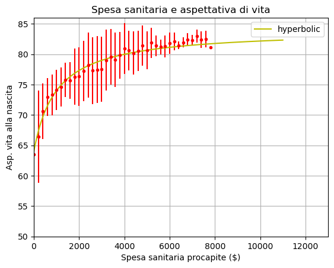
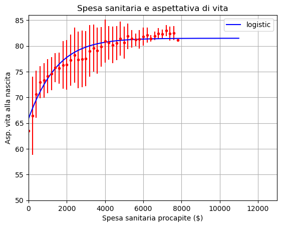
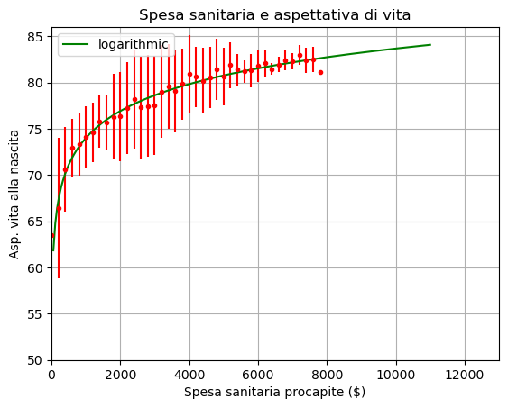
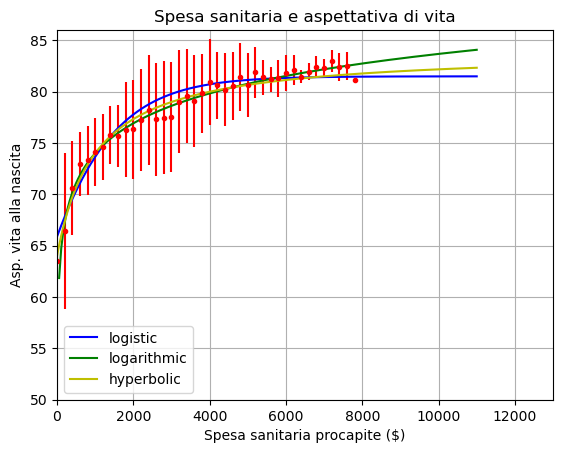

Per un anno in più
Curarsi costa.
Vivere a lungo costa.
Può essere a spese dello Stato, a spese dei privati, ma costa.
I grafici che osserviamo sotto mettono in relazione la spesa sanitaria di un Paese in un dato anno con l'aspettativa di vita alla nascita in quel Paese.
I dati sono tratti da
Il primo grafico mostra i dati di 59 Paesi tutti insieme, un colore diverso per ogni paese. I dati, quando disponibili, vanno dal 1970 al 2023. I successivi tre grafici mostrano la spesa sanitaria e l'aspettativa di vita di alcuni Paesi selezionati. Questi sono stati separati in piccoli gruppi di Paesi in modo che sia possibile distinguere l'andamento di ciascuno ma la scala è la stessa, in modo da facilitare il confronto.


Per dare un senso al confronto tra le spese sanitarie in Paesi diversi l'unità di misura utilizzata è quella dei cosiddetti
Il prossimo grafico è basato sugli stessi dati visualizzati in modo diverso. Per un ristretto intervallo di spesa, a passi di 200 $ (da 0$ a 100$, da 100$ a 300$, da 300$ a 500$ ...) i punti rappresentano l'aspettativa di vita media e le barre la dispersione tra i diversi paesi (calcolata come semidispersione).

I prossimi tre grafici rappresentano la sovrapposizione di una curva analitica che riprenda l'andamento dell'aspettativa di vita \( y \) in funzione della spesa sanitaria \( x \).
Il primo grafico è un arco di iperbole di equazione $$ y= \frac{k}{x-x_0} + y_0 $$ con \( y_0 = 84 \) anni, \( x_0 = -1000 \) $ e \( k = -20000\) anni \( \cdot \) $.
Il secondo grafico è una curva logistica di equazione $$ y = \frac{y_0}{1+e^{-r(x-x_0)}} $$ con \( y_0 = 81.5 \) anni, \( x_0 = -1800 \) $ e \( r = 0.0008 \) \( \$^{-1} \).
Il terzo grafico è una curva logaritmica di equazione $$ y=\alpha + \beta \log(x) $$ con \( \alpha = 45 \) anni, \( \beta = 4.2 \) $.



L'ultimo grafico riporta tutte e tre le curve insieme, per facilitare il confronto.

Guida all’analisi
Osserva il primo grafico che riporta i dati relativi a 59 Paesi, anche paragonandolo al quinto:
- Si può cogliere un andamento complessivo del legame tra spesa sanitaria e aspettativa di vita?
- Senza considerare le differenze tra i singoli Paesi ma osservando solo il complesso delle curve, come si può interpretare la forma del grafico?
Osserva il secondo, terzo e quarto grafico, relativi ad alcuni Paesi specifici
- Cerca di interpretare la forma dei grafici di alcuni dei Paesi rispetto alla curva complessiva, in relazione al loro sviluppo socio economico negli ultimi cinquant'anni
Confrontando il primo e i tre successivi si osserva che ci sono due curve che si discostano decisamente dall'andamento complessivo.
- Identifica i Paesi a cui queste curve sono relativi e cerca di interpretarne la forma particolare
Analizza una o più delle curve utilizzate negli ultimi quattro grafici per riprodurre analiticamente il legame tra aspettativa di vita e spesa sanitaria:
- Qual è il significato dei parametri della curva?
- Che ipotesi implicite ci possono essere dietro all'uso di una curva piuttosto che un'altra?
 |
Per un anno in più
|